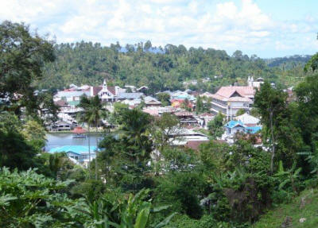
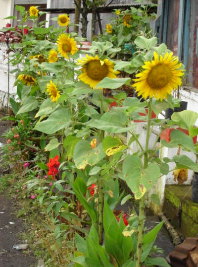

Have you ever thought of making money from your last vacation trip? I just realize that I could still make money from photos that I took during my last tour to Sonder, a small village in North Sulawesi of Indonesia. As a matter of fact, I don't travel very often but I like it very much. I remembered several years ago flying in a budget airline Batavia from Surabaya city to Manado city in Indonesia. I paid around 200 US dollars which I considered expensive at that time. I bought the ticket from a travel agency which had promised a cheap air fare. Well, that price was considered cheap compared to the ticket price charged by other airlines for the same route.
After traveling around the city, I continued my trip to a small village in the mountainous region of Minahasa, Sonder village. I enjoyed staying there because the air was fresh and I could see various kinds of flowers. There were not many foreign tourists at that time. But the region is often full with domestic tourists every weekend.
In that village, I walked around every day taking pictures with my Sony cyber-shot. A small but very good digital camera which has ISO features for night photo shoots. I took around 500 photos of the village wooden houses, flowers, and the villagers of course.
One week later, I flew to Manokwari, a town in West Papua which is still surrounded by tropical rainforest where I am settled at the moment. I just forgot all the photos which I shot while visiting Sonder for about two or three months when one day I realized that I could make money from them.
Fortunately, I had stored all of the photographs in my Toshiba laptop. When I need them again, they were still there. I wrote an article about flower tourism in Tincep, a smaller village next to Sonder and I sent it to Flona, a national magazines which focuses its discussions on flowers. I did not receive any reply for about 11 months when suddenly a telephone call from one of its staff reminded me about the article which I had forgotten. It was a woman. She asked me to give her my bank account number because she wanted to transfer some money as an honorarium for my article which they would published in November. A few days later, I was able to withdrew the money. For one article that I submitted to the magazine, I got Rp. 350,000 (around 35 US dollars). Well, it is not much but I am happy that the photos that I took during my vacation in Sonder can still be used to make money even until now. How? I have written many articles related to tourism and uploaded them into my websites. One of them is Traveling to the Minahasa Highland.
Actually, there are other ways to make money after traveling such as converting our vacation photos into postcards and selling them through souvenir shops.